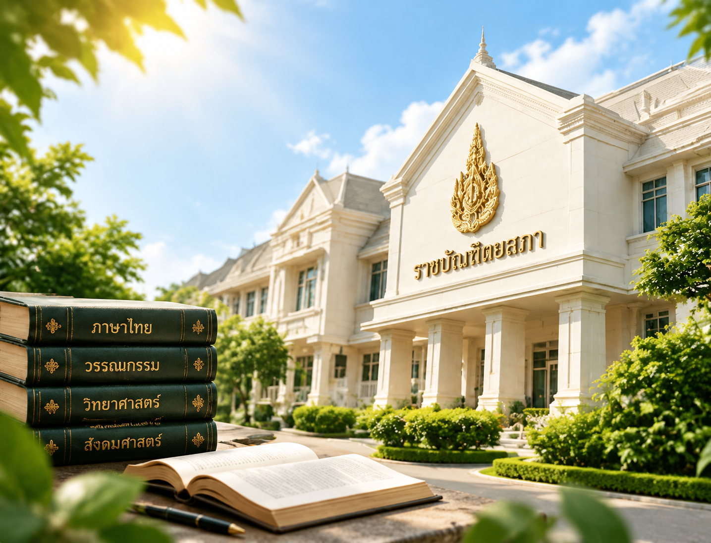

เกี่ยวกับราชบัณฑิตยสภา
ประวัติ อำนาจหน้าที่ ผู้บริหาร สำนักวิชาการ และกฎหมายที่เกี่ยวข้อง
ข้อมูลองค์กร
ประวัติความเป็นมา
สถาบันหลักของเครือข่ายทางปัญญาแห่งชาติ องค์การพัฒนาความรู้ที่สามารถเป็นแหล่งอ้างอิงทางวิชาการ
เมื่อวันที่ 19 เมษายน พ.ศ. 2469 พระบาทสมเด็จพระปกเกล้าเจ้าอยู่หัว รัชกาลที่ 7 ทรงพระกรุณาโปรดเกล้าฯ ประกาศให้จัดตั้ง “ราชบัณฑิตยสภา” ขึ้น เพื่อฟื้นฟูกิจการของกรมราชบัณฑิตย์ ซึ่งมีมาแต่โบราณและเป็นตำแหน่งสำหรับทรงตั้งผู้มีความรู้ศาสตราคมไว้รับราชการ

เหตุการณ์สำคัญ
-
2469
19 เมษายน
ก่อตั้ง “ราชบัณฑิตยสภา”
พระบาทสมเด็จพระปกเกล้าเจ้าอยู่หัว ทรงพระกรุณาโปรดเกล้าฯ ประกาศให้จัดตั้ง เพื่อฟื้นฟูกิจการของกรมราชบัณฑิตย์
-
2476
ตราพระราชบัญญัติว่าด้วยราชบัณฑิตยสถาน
ตามคำปรึกษาของสภาผู้แทนราษฎร ให้จัดตั้งราชบัณฑิตยสถาน เพื่อค้นคว้าหาความรู้นำมาเผยแพร่แก่ประชาชนและสร้างตำรับตำราให้แพร่หลาย
-
2477
16 มิถุนายน
ประชุมภาคีสมาชิกครั้งแรก ณ พระบรมมหาราชวัง
ปีเดียวกันเริ่มการประกวดแต่งหนังสือสอนพระพุทธศาสนาแก่เด็กประจำปี และรับโอนงานชำระปทานุกรมจากกระทรวงธรรมการ
-
2485
30 กันยายน
แต่งตั้งราชบัณฑิตครั้งแรก จำนวน 51 คน
มีพระบรมราชโองการแต่งตั้ง ภายหลังการออกพระราชบัญญัติว่าด้วยราชบัณฑิตยสถาน พุทธศักราช 2485
-
2549
ย้ายที่ทำการมาที่สนามเสือป่า เขตดุสิต
ที่ตั้งของสำนักงานจนถึงปัจจุบัน
-
2556
กลับไปใช้ชื่อเดิม “ราชบัณฑิตยสภา”
สภาราชบัณฑิตเห็นสมควรใช้ชื่อที่พระบาทสมเด็จพระปกเกล้าเจ้าอยู่หัวทรงสถาปนา เพื่อเฉลิมพระเกียรติในโอกาส 120 ปี พระบรมราชสมภพ
-
2558
14 กุมภาพันธ์
พระราชบัญญัติราชบัณฑิตยสภา พ.ศ. 2558 มีผลบังคับใช้
“ราชบัณฑิตยสถาน” เปลี่ยนเป็น “สำนักงานราชบัณฑิตยสภา” และ “สภาราชบัณฑิต” เปลี่ยนเป็น “ราชบัณฑิตยสภา”
งานหลัก
นอกจากการประกวดแต่งหนังสือสอนพระพุทธศาสนาแก่เด็กประจำปี ที่ดำเนินการมาตั้งแต่ พ.ศ. 2477 จนถึงปัจจุบัน ยังมีงานหลักอีก 5 งาน
- งานชำระพจนานุกรม
- งานสารานุกรม
- งานบัญญัติศัพท์ภาษาไทย
- งานอักขรานุกรมภูมิศาสตร์
- งานจัดทำหลักเกณฑ์การถอดอักษรไทยเป็นอักษรโรมัน
ผลงานที่เป็นที่รู้จัก ใช้เป็นแหล่งอ้างอิงและเป็นมาตรฐานในการเขียนหนังสือไทย ทั้งหนังสือราชการและในการศึกษาเล่าเรียน ให้เป็นระเบียบเดียวกัน คือ
พจนานุกรม ฉบับราชบัณฑิตยสถาน
ที่ทำการ
- แรกเริ่มตำหนักสมเด็จชั้นบน วังบางขุนพรหม
- ถึง พ.ศ. 2531ตึกถาวรวัตถุ (อาคารหอสมุดวชิราวุธด้านทิศเหนือ) ถนนหน้าพระธาตุ
- พ.ศ. 2531–2549อาคารราชวัลลภ ในพระบรมมหาราชวัง
- พ.ศ. 2549–ปัจจุบันสนามเสือป่า เขตดุสิต กรุงเทพมหานคร
อ่านความเป็นมาฉบับเต็ม
เมื่อวันที่ ๑๙ เมษายน พ.ศ. ๒๔๖๙ พระบาทสมเด็จพระปรมินทรมหาประชาธิปก พระปกเกล้าเจ้าอยู่หัว รัชกาลที่ ๗ แห่งราชวงศ์จักรีได้ทรงพระกรุณาโปรดเกล้าฯ ประกาศให้จัดตั้ง “ราชบัณฑิตยสภา” ขึ้น ทรงเห็นสมควรฟื้นฟูกิจการของ กรมราชบัณฑิตย์ ซึ่งมีมาแต่โบราณและเป็นตำแหน่งสำหรับทรงตั้งผู้มีความรู้ศาสตราคมไว้รับราชการ ต่อมาเมื่อ พ.ศ. ๒๔๗๖ สภาผู้แทนราษฎร ได้ถวายคำปรึกษาแด่พระบาทสมเด็จพระปกเกล้าเจ้าอยู่หัว สมควรจัดตั้งราชบัณฑิตยสถานให้มีสมาชิกผู้ประกอบด้วยคุณวิชา สมควรจะได้เลือกตั้งเป็นราชบัณฑิตในภายหน้าเพื่อกระทำการค้นคว้าหาความรู้นำมาเผยแพร่แก่ประชาชนและสร้างตำรับตำราให้แพร่หลายต่อไปจึงทรงพระกรุณาโปรดเกล้าฯ ให้ตรา พระราชบัญญัติว่าด้วยราชบัณฑิตยสถาน ขึ้นเมื่อ พ.ศ. ๒๔๗๖ และให้ยกเลิกประกาศตั้งราชบัณฑิตยสภา ฉบับลงวันที่ ๑๙ เมษายน พ.ศ. ๒๔๖๙
เริ่มแรกที่ตั้งราชบัณฑิตยสถานนั้น ยังไม่มีราชบัณฑิต มีแต่ภาคีสมาชิก ซึ่งจัดการประชุมครั้งแรกขึ้น ณ ในพระบรมมหาราชวัง เมื่อวันที่ ๑๖ มิถุนายน พุทธศักราช ๒๔๗๗ ภายหลังมีการออกพระราชบัญญัติว่าด้วยราชบัณฑิตยสถาน พุทธศักราช ๒๔๘๕ และมีพระบรมราชโองการแต่งตั้งราชบัณฑิตเป็นครั้งแรก เมื่อวันที่ ๓๐ กันยายน พุทธศักราช ๒๔๘๕ จำนวน ๕๑ คน
งานสำคัญในช่วงแรกเกิดจากพระราชดำริในพระบาทสมเด็จพระปกเกล้าเจ้าอยู่หัว คือ การประกวดแต่งหนังสือสอนพระพุทธศาสนาแก่เด็กประจำปี ที่ราชบัณฑิตยสถานดำเนินการสืบเนื่องมาตั้งแต่พุทธศักราช ๒๔๗๗ จนถึงปัจจุบัน นอกจากนี้ ยังมีงานหลักอีก ๕ งาน ได้แก่ งานชำระพจนานุกรม ซึ่งเดิมคืองานชำระปทานุกรมที่รับโอนจากกระทรวงธรรมการมาตั้งแต่พุทธศักราช ๒๔๗๗ งานสารานุกรม งานบัญญัติศัพท์ภาษาไทย งานอักขรานุกรมภูมิศาสตร์ และงานจัดทำหลักเกณฑ์การถอดอักษรไทยเป็นอักษรโรมัน
ที่ทำการของราชบัณฑิตยสถานแรกเริ่มได้ใช้ตำหนักสมเด็จชั้นบน ณ วังบางขุนพรหม ต่อมาย้ายไปอยู่ที่ตึกถาวรวัตถุ หรืออาคารหอสมุดวชิราวุธด้านทิศเหนือ ถนนหน้าพระธาตุ จนถึงพุทธศักราช ๒๕๓๑ จากนั้นย้ายไปใช้อาคารราชวัลลภ ในพระบรมมหาราชวัง จนถึงพุทธศักราช ๒๕๔๙ ได้ย้ายมาอยู่ที่สนามเสือป่า เขตดุสิต กรุงเทพมหานคร จนถึงปัจจุบัน
การดำเนินงานของราชบัณฑิตยสถาน แบ่งเป็น ๒ ส่วน คือ ส่วนสภาราชบัณฑิตและส่วนข้าราชการประจำ
สภาราชบัณฑิตทำหน้าที่วางนโยบายในการดำเนินงานด้านวิชาการ ประกอบด้วยกรรมการสภา ซึ่งเป็นราชบัณฑิตจาก ๓ สำนัก ได้แก่ สำนักธรรมศาสตร์และการเมือง สำนักวิทยาศาสตร์ และสำนักศิลปกรรม มีนายกราชบัณฑิตยสถาน เป็นนายกสภา อุปนายกราชบัณฑิตยสถานเป็นอุปนายกสภา มีเลขาธิการราชบัณฑิตยสถานทำหน้าที่เลขานุการสภา และรองเลขาธิการราชบัณฑิตยสถานทำหน้าที่ผู้ช่วยเลขานุการสภา
ส่วนข้าราชการประจำ มีเลขาธิการราชบัณฑิตยสถาน เป็นหัวหน้าส่วนราชการ และมีรองเลขาธิการราชบัณฑิตยสถาน ช่วยปฏิบัติราชการ กำกับดูแลการปฏิบัติงานด้านวิชาการและงานธุรการของสำนักงานเลขานุการกรม กองธรรมศาสตร์และการเมือง กองวิทยาศาสตร์ และกองศิลปกรรม รวมทั้งประสานการดำเนินงานกับทุกสำนัก
การดำเนินงานด้านวิชาการ ดำเนินงานในรูปของคณะกรรมการวิชาการ เพื่อจัดประชุมพิจารณาศัพท์ บัญญัติศัพท์ จัดทำคำอธิบายศัพท์ในสาขาวิชาต่าง ๆ ตลอดจนกำหนดหลักเกณฑ์ทางภาษา แล้วนำผลงานซึ่งเป็นองค์ความรู้เผยแพร่สู่ประชาชนในช่องต่าง ๆ ทั้งสื่อสิ่งพิมพ์ วิทยุ โทรทัศน์ สื่ออิเล็กทรอนิกส์ เพื่อให้เข้าถึงความต้องการของประชาชนได้อย่างกว้างขวาง และมีการรับฟังความความคิดเห็น เพื่อนำมาปรับปรุงการให้การบริการให้มีประสิทธิภาพยิ่งขึ้น
ราชบัณฑิตยสถานได้ดำเนินงานตามพันธกิจในการศึกษา ค้นคว้า วิจัย และบำรุงสรรพวิชามาอย่างต่อเนื่อง ผลงานทางวิชาการของราชบัณฑิตยสถานซึ่งเป็นที่รู้จักและใช้เป็นแหล่งอ้างอิงและเป็นมาตรฐานในการเขียนหนังสือไทย ทั้งหนังสือราชการและในการศึกษาเล่าเรียน ให้เป็นระเบียบเดียวกัน คือ พจนานุกรม ฉบับราชบัณฑิตยสถาน
ในปี ๒๕๕๖ ราชบัณฑิตยสภาโดยสภาราชบัณฑิตเห็นเป็นการสมควรเปลี่ยนชื่อ “ราชบัณฑิตยสถาน” เป็น “ราชบัณฑิตยสภา” อันเป็นชื่อเดิมที่พระบาทสมเด็จพระปกเกล้าเจ้าอยู่หัวได้ทรงสถาปนาขึ้นเมื่อวันที่ ๑๙ เมษายน พ.ศ. ๒๔๖๙ เพื่อเฉลิมพระเกียรติในโอกาส ๑๒๐ ปี พระบรมราชสมภพ รวมทั้งปรับปรุงอำนาจหน้าที่และการบริหารงานวิชาการของราชบัณฑิตยสภาให้แพร่หลายแก่วงวิชาการของประเทศและประชาชนทั่วไปมากขึ้น ประกอบกับให้มีการจัดตั้งกองทุนสวัสดิการสมาชิกราชบัณฑิตยสภาเพื่อเป็นประโยชน์แก่สมาชิกราชบัณฑิตยสภา และกำหนดให้รายได้ที่ราชบัณฑิตยสภาได้รับจากการบริหารทางด้านวิชาการและการจัดการศึกษาอบรมสามารถนำไปจ่ายในการดำเนินการตามอำนาจหน้าที่ของสำนักงานราชบัณฑิตยสภาโดยไม่ต้องนำส่งคลังเป็นรายได้แผ่นดิน เพื่อให้มีความคล่องตัวในการบริหารงานวิชาการมากขึ้น
ในปี ๒๕๕๘ พระบาทสมเด็จพระเจ้าอยู่หัวได้มีพระบรมราชโองการโปรดเกล้าโปรดกระหม่อมให้ประกาศว่าเป็นการสมควรปรับปรุงกฎหมายว่าด้วยราชบัณฑิตยสถาน และทรงพระกรุณาโปรดเกล้าโปรดกระหม่อมให้ตราพระราชบัญญัติราชบัณฑิตยสภา พ.ศ. ๒๕๕๘ ซึ่งได้ประกาศลงในราชกิจจานุเบกษา เล่ม ๑๓๒ ตอนที่ ๑๐ ก ลงวันที่ ๑๓ กุมภาพันธ์ ๒๕๕๘ และมีผลบังคับใช้ตั้งแต่วันที่ ๑๔ กุมภาพันธ์ พ.ศ. ๒๕๕๘ เป็นต้นไป ชื่อหน่วยงาน “ราชบัณฑิตยสถาน” จึงเปลี่ยนเป็น “สำนักงานราชบัณฑิตยสภา” และ “สภาราชบัณฑิต” จึงเปลี่ยนเป็น “ราชบัณฑิตยสภา”
อำนาจหน้าที่
The text of the Act is available in Thai only.
มาตรา ๖ ของพระราชบัญญัติราชบัณฑิตยสภา พ.ศ. ๒๕๕๘ ระบุว่าราชบัณฑิตยสภาเป็นสถานที่บำรุงสรรพวิชา ซึ่งพระบาทสมเด็จพระปกเกล้าเจ้าอยู่หัวได้ทรงสถาปนาขึ้น มีวัตถุประสงค์ที่จะค้นคว้าและวิจัยเพื่อเผยแพร่ส่งเสริมแลกเปลี่ยนความรู้ พัฒนา อนุรักษ์ และให้บริการทางวิชาการให้เป็นคุณประโยชน์แก่ประเทศและประชาชน
มาตรา ๑๒ ราชบัณฑิตยสภามีสมาชิก ๓ ประเภท คือ
- ภาคีสมาชิก
- ราชบัณฑิต
- ราชบัณฑิตกิตติมศักดิ์
มาตรา ๒๔ ให้มีสภาขึ้นในสำนักงานราชบัณฑิตยสภา เรียกว่า “ราชบัณฑิตยสภา” ประกอบด้วยนายกราชบัณฑิตยสภา เป็นนายกสภา อุปนายกราชบัณฑิตยสภา ๒ คน เป็นอุปนายกสภา ราชบัณฑิตทุกคนเป็นกรรมการสภา โดยมีเลขาธิการราชบัณฑิตยสภาทำหน้าที่เลขานุการสภา และรองเลขาธิการราชบัณฑิตยสภาทำหน้าที่ผู้ช่วยเลขานุการสภา
ราชบัณฑิตยสภามีอำนาจหน้าที่วางนโยบายการดำเนินงานด้านวิชาการตามอำนาจหน้าที่ของสำนักงานราชบัณฑิตยสภา พิจารณาให้ความเห็นชอบในการออกข้อบังคับ และระเบียบเกี่ยวกับการดำเนินงานของราชบัณฑิตยสภา เลือกนายกราชบัณฑิตยสภา อุปนายกราชบัณฑิตยสภา รวมทั้งมีมติให้ความเห็นชอบในการเสนอแต่งตั้งราชบัณฑิตและราชบัณฑิตกิตติมศักดิ์
หน้าที่ภารกิจและบทบาทสำคัญของสำนักงานราชบัณฑิตยสภา อันได้แก่ การสร้างองค์ความรู้ในศาสตร์สาขาต่าง ๆ การกำหนดมาตรฐานการใช้ภาษาไทย และการเพิ่มประสิทธิภาพในการให้บริการทางวิชาการแก่ประชาชน ได้ดำเนินการและพัฒนามาอย่างต่อเนื่องนับตั้งแต่วันที่ ๑๙ เมษายน พุทธศักราช ๒๔๖๙ จนถึงปัจจุบัน
ทิศทางและการดำเนินงาน
เนื้อหาจะจัดทำโดยสำนักงานราชบัณฑิตยสภา
แผนผังการบริหาร
เนื้อหาจะจัดทำโดยสำนักงานราชบัณฑิตยสภา
ผู้บริหาร
นายกและอุปนายกปัจจุบัน
เนื้อหาจะจัดทำโดยสำนักงานราชบัณฑิตยสภา
ทำเนียบนายกราชบัณฑิตยสภา
เนื้อหาจะจัดทำโดยสำนักงานราชบัณฑิตยสภา
สารจากนายกราชบัณฑิตยสภา
เนื้อหาจะจัดทำโดยสำนักงานราชบัณฑิตยสภา
สำนักวิชาการ
ราชบัณฑิตสังกัดสำนักใดสำนักหนึ่ง แต่ละสำนักครอบคลุมกลุ่มสาขาวิชาของตน
สำนักธรรมศาสตร์และการเมือง
สาขาวิชา: ปรัชญา นิติศาสตร์ รัฐศาสตร์ เศรษฐศาสตร์ สังคมศาสตร์ ประวัติศาสตร์
เนื้อหาจะจัดทำโดยสำนักงานราชบัณฑิตยสภา
สำนักวิทยาศาสตร์
สาขาวิชา: วิทยาศาสตร์กายภาพ ชีวภาพ ประยุกต์ แพทยศาสตร์ วิศวกรรมศาสตร์ เทคโนโลยี
เนื้อหาจะจัดทำโดยสำนักงานราชบัณฑิตยสภา
สำนักศิลปกรรม
สาขาวิชา: ภาษาและวรรณกรรม ภาษาศาสตร์ ดุริยางคศิลป์ ทัศนศิลป์ สถาปัตยกรรม
เนื้อหาจะจัดทำโดยสำนักงานราชบัณฑิตยสภา
กฎหมายและระเบียบ
พระราชบัญญัติที่เกี่ยวข้อง
พระราชบัญญัติราชบัณฑิตยสภา พ.ศ. ๒๕๕๘
เนื้อหาจะจัดทำโดยสำนักงานราชบัณฑิตยสภา
ข้อบังคับราชบัณฑิตยสภา
เนื้อหาจะจัดทำโดยสำนักงานราชบัณฑิตยสภา
ระเบียบราชบัณฑิตยสภา
เนื้อหาจะจัดทำโดยสำนักงานราชบัณฑิตยสภา
ประกาศราชบัณฑิตยสภา
เนื้อหาจะจัดทำโดยสำนักงานราชบัณฑิตยสภา